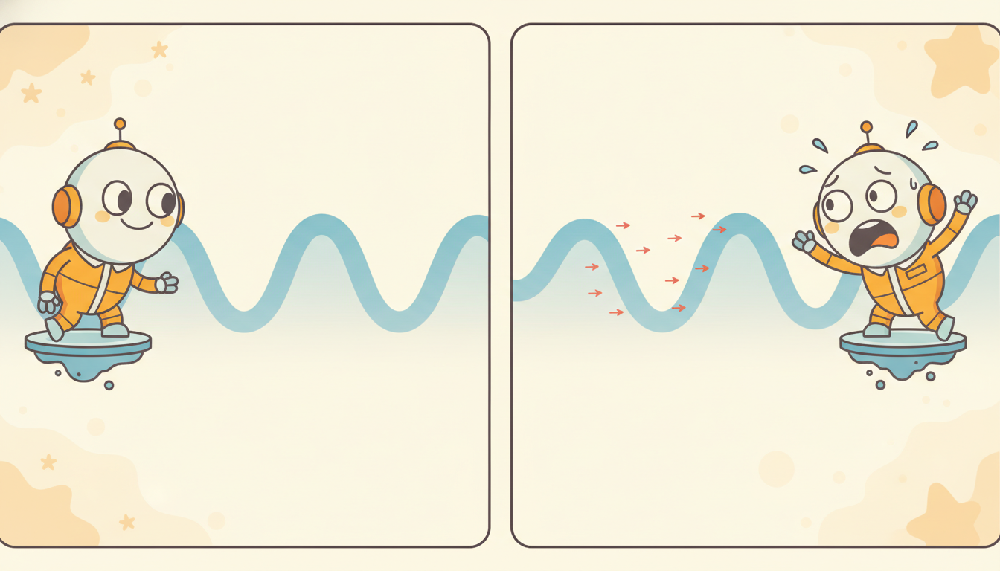

"I was shown a heartbeat trace I had classified ten thousand times as normal sinus rhythm. Someone added a ripple smaller than the sensor's own noise floor, a wiggle no cardiologist would ever see, and asked me again. I said ventricular tachycardia with ninety-nine percent confidence. The trace was the same trace. I had simply been convinced it was a different day entirely."
A Tiny Perturbation That Convinced the Model It Was a Different Day Entirely
A temporal model can fail in two structurally different ways, and they demand different defenses. The first is natural failure: the world drifts, sensors degrade, samples go missing, and the distribution the model meets in production is no longer the one it trained on. The second is adversarial failure: an attacker who understands the model crafts a perturbation, often far smaller than the natural noise the model shrugs off, specifically chosen to push a single input across a decision boundary or to bend a forecast in a profitable direction. The unifying object is the same as everywhere in deep learning, the loss surface in input space, but time series add constraints no image attack faces: a perturbation must respect the smoothness and autocorrelation of a real signal, it often must be causal (you cannot edit the past), and "imperceptible" means imperceptible in a waveform a domain expert reads, not in a grid of pixels. This section builds the two-kinds-of-robustness frame, derives FGSM and PGD and adapts them to sequences, surveys attacks unique to temporal systems (poisoning a training stream, evading a forecaster, perturbing the observations a control policy sees), then turns to defenses: adversarial training, input smoothing and denoising, certified robustness by randomized smoothing, and detection, all under the stubborn robustness-versus-accuracy trade. The worked example crafts FGSM and PGD perturbations from scratch against a trained classifier, measures the accuracy collapse as the budget grows, reproduces it in three lines of torchattacks, and shows adversarial training buying the robustness back. You leave able to attack a temporal model, measure how fragile it is, and harden it.
In Section 33.1 we opened the model to make its temporal predictions interpretable: attribution over time, attention as explanation, and the caveats that come with both. Interpretability answers "why did the model say that". This section answers a sharper and more adversarial question: "can someone make the model say something false on purpose, and how do we stop them". The two are linked. The same gradient that a saliency map visualizes is the gradient an attacker ascends to build a perturbation, so the interpretability machinery of the previous section is, read backward, the attack machinery of this one. We will use the gradient of the loss with respect to the input, $\nabla_{\mathbf{x}}\mathcal{L}$, as the single workhorse object, exactly as Section 33.1 did, but now to break the model rather than to explain it.
Why does a textbook on temporal AI need a dedicated section on adversarial robustness, beyond the general treatment any deep-learning course gives? Because the systems Part VIII is about deploying are disproportionately attractive and disproportionately exposed. A forecaster sets a price; an anomaly detector triggers an alert or suppresses one; a control policy moves a physical actuator. Each is a place where a small, well-chosen lie in the input converts directly into money, into a missed alarm, or into a physical action, and each consumes a stream that an adversary may partly control. The natural-shift robustness of Chapter 20 and the adversarial robustness of this section are the two halves of what it takes to trust a temporal model in the world, and a deployed system needs both.
The competencies this section installs are four. To separate the two robustness notions cleanly and say which mechanism each calls for. To write FGSM and PGD as constrained gradient ascent on the loss and to state the extra constraints, smoothness, causality, imperceptibility, that make a time-series attack distinctive. To name the temporal-specific threat models, poisoning, forecasting evasion, and policy-observation attacks, and connect them to the rest of the book. And to run an attack and a defense end to end, measuring the budget-versus-success-rate curve that quantifies fragility. These are the load-bearing skills for Section 33.3 on fairness and for the deployment chapter that follows.
1. Two Kinds of Robustness: Natural Shift and Adversarial Perturbation Beginner
Robustness is an overloaded word, and the first discipline is to split it into two notions that look similar from a distance and demand opposite mindsets up close. Natural robustness is robustness to perturbations the world produces on its own and does not choose to hurt you: the slow distribution drift that Chapter 20 studies (the data-generating process changes, last year's regime is not this year's), additive measurement noise, missing samples from a dropped packet, a stuck or miscalibrated sensor. These perturbations are typically high-entropy and indifferent: noise points in a random direction, drift moves the whole distribution, and a model that generalizes well absorbs them because they look like the variation it already saw in training.
Adversarial robustness is robustness to perturbations a thinking opponent constructs to maximize your loss. The defining difference is not size but direction. Random noise of a given magnitude is almost always harmless because it spreads its energy across all input directions, most of which the model ignores; an adversarial perturbation of the same magnitude concentrates all of its energy in the single worst direction, the one in which the decision boundary is nearest. This is why a model can be provably stable to noise with standard deviation $0.1$ and catastrophically broken by an adversarial perturbation of norm $0.01$: the noise is averaged over a benign sphere, the attack is a spear aimed at the boundary. The two notions even pull defenses in opposite ways, as Figure 33.2.1 lays out.
| Property | Natural robustness (Chapter 20) | Adversarial robustness (this section) |
|---|---|---|
| source of perturbation | the world: drift, noise, missingness, sensor faults | an optimizing opponent |
| direction | random or distributional | worst-case, aimed at the boundary |
| typical magnitude needed to break the model | large (model generalizes over it) | tiny (concentrated in one direction) |
| governing quantity | distribution distance, drift rate | $\nabla_{\mathbf{x}}\mathcal{L}$, local boundary distance |
| defense family | continual learning, recalibration, denoising | adversarial training, smoothing, certificates, detection |
| worst-case guarantee | usually none; track and adapt | certifiable for some methods (randomized smoothing) |
Temporal, financial, and control systems are unusually attractive targets, and it is worth being concrete about why. They sit on the critical path of decisions with direct payoff: a forecaster that an attacker can nudge upward by a fraction of a percent is a money pump if it sets a quoted price or a trading signal; an anomaly detector an attacker can keep quiet is a way to hide an intrusion in the sensor stream of Chapter 8; a control policy whose observations can be perturbed can be steered into an unsafe action. They also consume streaming, partially observable inputs over channels an adversary may co-own (a public market feed, a shared sensor bus, a network link), so the attacker frequently has genuine write access to part of the input. And because the input is a signal a human occasionally audits, the attacker's incentive is to stay imperceptible in that signal, which is a sharper and more interesting constraint than staying imperceptible in a static image.
The reason a tiny adversarial perturbation can do what a much larger random one cannot is geometric. A high-dimensional model has decision boundaries that are close in some directions and far in most, and a generalizing model is robust precisely because typical directions are far ones. Random noise samples a typical direction and is harmless; an adversary solves $\arg\max_{\|\boldsymbol{\delta}\|\le\epsilon}\mathcal{L}(\mathbf{x}+\boldsymbol{\delta})$ and finds the one near direction. So "the model is robust to noise" and "the model is robust to attack" are nearly unrelated claims, and testing only the first, which is the common mistake, certifies nothing about the second. Every method in this section is, at bottom, a way to either find that worst direction (attacks) or flatten the loss surface so no near direction exists (defenses).
2. Adversarial Examples for Time Series: FGSM and PGD Intermediate

An adversarial example is an input $\mathbf{x}' = \mathbf{x} + \boldsymbol{\delta}$, close to a real input $\mathbf{x}$ under some norm, on which the model errs: a classifier flips its label, or a forecaster's output is dragged toward a target the attacker wants. "Close" is formalized by a budget $\epsilon$ and a norm, almost always the $\ell_\infty$ norm $\|\boldsymbol{\delta}\|_\infty \le \epsilon$ (every timestep may be nudged by at most $\epsilon$) or the $\ell_2$ norm $\|\boldsymbol{\delta}\|_2 \le \epsilon$ (the total energy of the perturbation is bounded). The attacker's problem is a constrained optimization: maximize the loss the defender minimizes, subject to staying within the budget,
$$\boldsymbol{\delta}^\star \;=\; \arg\max_{\|\boldsymbol{\delta}\|_p \,\le\, \epsilon}\; \mathcal{L}\big(f_\theta(\mathbf{x}+\boldsymbol{\delta}),\, y\big),$$where $f_\theta$ is the trained model, $y$ the true label, and $\mathcal{L}$ the same loss used in training. This is the adversary's mirror image of empirical risk minimization, and every attack below is a different way of approximately solving it.
Fast Gradient Sign Method (FGSM). The cheapest attack takes a single step. Linearize the loss around $\mathbf{x}$: to first order, $\mathcal{L}(\mathbf{x}+\boldsymbol{\delta}) \approx \mathcal{L}(\mathbf{x}) + \boldsymbol{\delta}^\top \nabla_{\mathbf{x}}\mathcal{L}$. Under the $\ell_\infty$ budget $\|\boldsymbol{\delta}\|_\infty\le\epsilon$, the $\boldsymbol{\delta}$ that maximizes this linear form is the one that points each coordinate in the direction of its gradient sign, at full budget. That gives the one-shot perturbation
$$\boldsymbol{\delta}_{\text{FGSM}} \;=\; \epsilon \,\operatorname{sign}\!\big(\nabla_{\mathbf{x}}\mathcal{L}(f_\theta(\mathbf{x}), y)\big), \qquad \mathbf{x}' = \mathbf{x} + \boldsymbol{\delta}_{\text{FGSM}}.$$One gradient, one sign, one step of size $\epsilon$. FGSM (Goodfellow, Shlens, and Szegedy, 2015) is fast and, on undefended models, alarmingly effective, but because it trusts the linearization globally it is a weak attack against any model whose loss surface curves.
Projected Gradient Descent (PGD). The strong attack iterates FGSM and projects back into the budget after each step. With step size $\alpha$, projection $\Pi_{\mathcal{B}_\epsilon}$ onto the $\epsilon$-ball around $\mathbf{x}$, and $N$ steps,
$$\mathbf{x}'^{(0)} = \mathbf{x} + \text{(small random start)}, \qquad \mathbf{x}'^{(i+1)} = \Pi_{\mathcal{B}_\epsilon}\!\Big(\mathbf{x}'^{(i)} + \alpha\,\operatorname{sign}\big(\nabla_{\mathbf{x}}\mathcal{L}(f_\theta(\mathbf{x}'^{(i)}), y)\big)\Big).$$For the $\ell_\infty$ ball the projection is a coordinatewise clip to $[\mathbf{x}-\epsilon, \mathbf{x}+\epsilon]$. PGD (Madry et al., 2018) is the standard strong first-order attack: by re-linearizing at each step it follows the curved loss surface where FGSM's single linearization fails, and the random start escapes the trivial degeneracy at $\mathbf{x}$. PGD is both the benchmark attack and, run inside the training loop, the basis of the strongest empirical defense in subsection four.
So far this is the image-attack story unchanged. What makes a time-series adversarial example distinctive is the set of constraints the perturbation must satisfy to count as a real threat, and these have no clean analogue in the static-image setting:
- Smoothness and spectral plausibility. A raw $\operatorname{sign}$ perturbation is white noise: it injects energy at every frequency, including frequencies a real signal never contains, so it stands out to any spectral check (the frequency-domain tools of Chapter 4 are a cheap detector). A serious time-series attack low-pass-filters or otherwise band-limits $\boldsymbol{\delta}$ so the adversarial signal still looks like something a sensor could have produced.
- Causality. In a streaming or control setting the attacker can only edit the present and future, not rewrite history that the model has already consumed. A causal attack constrains $\boldsymbol{\delta}_t = 0$ for $t$ already past, and may only perturb the most recent window, which is a strictly harder optimization than the offline, full-sequence attack.
- Imperceptibility in the signal, not the pixel. "Small" means small to whoever audits the waveform. For an ECG that is a clinician, for a price tape an analyst, for a vibration trace a maintenance engineer. The right budget is set in the units and perceptual frame of the domain, and an $\ell_\infty$ ball is only a crude proxy for it. Some attacks instead bound a perceptual or dynamic-time-warping distance.
- Sparsity in time. An attacker who controls only a few timesteps (a brief window of write access) needs a perturbation supported on those steps, an $\ell_0$-style constraint that concentrates the attack rather than spreading it.
Adding these constraints turns the clean $\ell_p$ ball into a smaller, oddly shaped feasible set, and a competent time-series attack is PGD plus a projection onto that set at every step. The good news for the defender is that each constraint the attacker must respect also narrows the space of perturbations to defend against; the bad news is that the constrained attacks that survive are exactly the ones that look like plausible signals and slip past naive checks.
Take a tiny window $\mathbf{x} = (1.00,\, 0.50,\, -0.20)$ and suppose the loss gradient at this point is $\nabla_{\mathbf{x}}\mathcal{L} = (+0.8,\, -0.3,\, +0.1)$, with budget $\epsilon = 0.05$ under $\ell_\infty$. FGSM takes the sign of each coordinate, $\operatorname{sign}(\nabla_{\mathbf{x}}\mathcal{L}) = (+1,\, -1,\, +1)$, and steps by $\epsilon$: $\boldsymbol{\delta} = (+0.05,\, -0.05,\, +0.05)$, giving $\mathbf{x}' = (1.05,\, 0.45,\, -0.15)$. Every coordinate moved by exactly the full budget $0.05$, the maximum the constraint allows, and each in the direction that raises the loss. The first-order loss increase is $\boldsymbol{\delta}^\top\nabla_{\mathbf{x}}\mathcal{L} = 0.05\cdot0.8 + 0.05\cdot0.3 + 0.05\cdot0.1 = 0.06$ (the signs align by construction so every term is positive). A causal variant that may only edit the most recent step would force $\delta_1 = \delta_2 = 0$ and keep only $\delta_3 = +0.05$, cutting the first-order damage to $0.005$, a tenfold weaker attack: the constraints of this subsection have a direct, quantifiable cost to the attacker.
There is something almost rude about FGSM. It throws away the magnitude of the gradient and keeps only its sign, so a coordinate where the loss is wildly sensitive and one where it barely matters get the exact same nudge of $\epsilon$. This looks wasteful, and for a curved loss it is, which is why PGD does better. But for the $\ell_\infty$ ball it is provably the optimal first-order move: when your budget is "each coordinate may move by at most $\epsilon$", the best you can do per coordinate is to spend the whole $\epsilon$ in the right direction, and the right direction is all the sign tells you. The crude-looking heuristic is, for that one geometry, exactly correct.
3. Attacks Specific to Temporal Systems Intermediate
FGSM and PGD are evasion attacks at test time on a classifier, the most studied case. But a deployed temporal system exposes attack surfaces a static classifier does not, because it trains on a stream, forecasts the future, and sometimes acts on the world. Three threat models matter.
Poisoning the training stream. A model that learns online or is periodically retrained on incoming data (the continual setting of Chapter 20) can be attacked at training time. The adversary injects crafted samples into the stream so that the updated model behaves as the attacker wants: a backdoor that misclassifies any input carrying a specific trigger pattern, or a slow drift that degrades the model while looking like ordinary nonstationarity. Streaming poisoning is especially dangerous because the usual defense against drift, "just keep learning from the new data", is precisely the mechanism the attacker exploits. The line between malicious poisoning and benign concept drift is genuinely thin, and telling them apart is an open problem that connects this section directly to the drift-detection machinery of Chapter 8.
Evasion in forecasting. Against a regressor the attacker's goal is not a flipped label but a steered prediction. The objective swaps the classification loss for a targeting loss that pulls the forecast $\hat{\mathbf{y}}$ toward an attacker-chosen target $\mathbf{y}^{\text{target}}$, for instance $\mathcal{L}_{\text{atk}} = \|f_\theta(\mathbf{x}+\boldsymbol{\delta}) - \mathbf{y}^{\text{target}}\|^2$, minimized over $\boldsymbol{\delta}$ within budget. The same FGSM and PGD machinery applies, only the sign flips (the attacker now descends a targeting loss). A perturbation to the recent history of a price or load series that nudges the next-step forecast up or down by a controlled amount is the canonical money-relevant attack, and because forecasts feed downstream decisions, a small steered error compounds.
Attacks on RL policies and observations. A control or reinforcement-learning agent (the policies of Part VI) reads an observation $\mathbf{o}_t$ and emits an action $\mathbf{a}_t = \pi_\theta(\mathbf{o}_t)$. An observation attack perturbs $\mathbf{o}_t$ within a budget to change the action, $\arg\max_{\|\boldsymbol{\delta}\|\le\epsilon}\,\big[\text{some measure of how bad } \pi_\theta(\mathbf{o}_t+\boldsymbol{\delta}) \text{ is}\big]$, where "bad" might mean far from the optimal action, or minimizing the agent's expected return, or steering toward a specific unsafe action. Because the agent acts in a feedback loop, a perturbation at one step changes the state distribution at the next, so temporal attacks on policies compound through the dynamics in a way a one-shot classifier attack does not: a small early nudge can cascade into a large trajectory deviation. This is the adversarial face of the robustness concerns that the optimal-control and imitation methods of Chapter 27 must contend with.
Who: The reliability-engineering team at a wind-farm operator running an anomaly detector on per-turbine vibration telemetry, the sensor-IoT series threaded through Chapter 8.
Situation: The detector flags bearing faults early so a turbine can be serviced before catastrophic failure. A maintenance contractor, paid per callout, had read access to the telemetry bus and a financial incentive to manufacture false alarms.
Problem: Engineers found a cluster of callouts where, on inspection, the bearings were fine. The triggering traces looked like genuine incipient faults to the model but carried a faint, oddly periodic ripple no real bearing produces.
Dilemma: Tightening the detector's threshold to reject the spoofed traces would also suppress real early faults, the exact failures the system existed to catch. Loosening it invited more false callouts. The robustness-accuracy trade was staring them in the face.
Decision: They treated the ripple as an adversarial perturbation, not noise, and added two layers: a spectral plausibility check (the injected ripple lived at a frequency no bearing physics produces, flagged by the methods of Chapter 4) and adversarial training of the detector against PGD-crafted ripples within a physically plausible budget.
How: They generated adversarial vibration windows with constrained PGD (band-limited, causal), labeled them as the no-fault class, and fine-tuned, exactly the adversarial-training recipe of subsection four, while the spectral check ran as a cheap first-line filter.
Result: The spoofed callouts dropped to near zero and the detector's true-fault sensitivity was essentially unchanged, because the spectral check caught the implausible perturbations the adversarial training had not fully neutralized. The contractor's spoof stopped paying.
Lesson: Domain physics is a defense. A perturbation that is imperceptible in raw amplitude can be glaring in the frequency or dynamics domain, so the cheapest robustness for a temporal system is often a plausibility check the attacker did not know to satisfy.
4. Defenses: Adversarial Training, Smoothing, Certificates, Detection Advanced
Defenses fall into four families, and the honest framing is that only some of them come with guarantees while the rest are empirical arms-race moves. We take them in order of how much they promise.
Adversarial training is the strongest empirical defense and the most expensive. The idea (Madry et al., 2018) is to redefine the training objective as a saddle point: minimize the loss against the worst-case perturbation within the budget, rather than against the clean input. Formally the defender solves
$$\min_{\theta}\; \mathbb{E}_{(\mathbf{x},y)}\Big[\max_{\|\boldsymbol{\delta}\|_p \le \epsilon}\; \mathcal{L}\big(f_\theta(\mathbf{x}+\boldsymbol{\delta}),\, y\big)\Big],$$where the inner maximization is approximated by running PGD on each batch and the outer minimization is ordinary SGD on the resulting adversarial examples. Each training step now contains an attack, so adversarial training costs roughly $N+1$ times a normal step for $N$-step PGD, but it produces models whose loss surface is genuinely flatter near the data, which is the only known way to get broad empirical robustness. We demonstrate exactly this in subsection five.
Input smoothing and denoising sit in front of the model and try to remove the perturbation before it reaches the classifier. For time series the natural smoothers are the ones the book already taught: a low-pass or moving-average filter, a wavelet shrinkage, or the denoising autoencoders and reconstruction-based cleaners of Section 4.3 and the anomaly-aware reconstruction of Section 8.2. Because a white-noise $\operatorname{sign}$ perturbation lives at high frequencies and a real signal does not, a low-pass filter strips much of an unconstrained attack for almost no cost. The weakness is the obvious one: an attacker who knows the smoother simply optimizes through it (a band-limited PGD attack, subsection two), so smoothing raises the bar without certifying anything.
Certified robustness by randomized smoothing is the one defense in this list that comes with a provable guarantee. Instead of classifying $\mathbf{x}$ directly, build a smoothed classifier $g(\mathbf{x})$ that returns the class the base classifier $f$ outputs most often under Gaussian noise added to the input, $g(\mathbf{x}) = \arg\max_c\, \Pr_{\boldsymbol{\eta}\sim\mathcal{N}(0,\sigma^2 I)}\big[f(\mathbf{x}+\boldsymbol{\eta}) = c\big]$. Cohen, Rosenfeld, and Kolter (2019) proved that $g$ is certifiably robust: if the top class wins by a large enough margin under the noise, then no $\ell_2$ perturbation of radius below a computable $R$ can change $g$'s prediction. The certified radius grows with the noise level $\sigma$ and with the margin, which is the formal statement of the trade we keep meeting: more smoothing buys a larger guarantee at the cost of clean accuracy. For time series the Gaussian noise must respect the signal's structure to keep the base accuracy usable, an active research wrinkle, but the guarantee is real and that makes randomized smoothing qualitatively different from the empirical defenses around it.
Detection declines to classify suspicious inputs at all. A detector learns to tell adversarial inputs from clean ones, by their statistics (an adversarial perturbation often leaves a spectral or kurtosis fingerprint), by disagreement among an ensemble, or by anomalous activations, and routes flagged inputs to a human or a safe default. Detection is attractive when abstaining is cheap (refusing one trade is fine) and weak when it is not, and like smoothing it can be evaded by an attacker who adds "look clean to the detector" to the objective. Detection composes well with the others: a detector as a cheap first line, an adversarially trained model behind it.
Every defense in this section trades some clean accuracy for robustness, and this is not an artifact of weak methods, it is structural. A model that minimizes average loss on clean data will, in general, place its decision boundary as close to some classes as the data allows, because that maximizes clean accuracy; making the boundary robust means pushing it away from the data, which necessarily misclassifies some clean points that lived in the margin you gave up. Adversarial training, smoothing, and certified methods all enforce a margin and all pay for it in clean accuracy. The practical consequence is that "robust at any cost" is the wrong target. The right one is "robust enough against the threat model I actually face, at an accuracy I can live with", which means you must name the budget $\epsilon$ and the threat (subsection three) before you can choose a defense. A defense quoted without a threat model is meaningless.
The field is moving from porting image attacks to building genuinely temporal ones and certifying them. Constrained and imperceptible time-series attacks that respect smoothness, causality, and dynamic-time-warping distance (rather than a raw $\ell_\infty$ ball) are now standard in the benchmark literature, and 2024 to 2025 work extends them to the deep forecasters and foundation models of Chapter 15, asking whether a zero-shot forecaster like TimesFM or a Chronos-style model inherits the fragility of the supervised models it replaces (early results say it does, and that scale alone does not confer robustness). Certified defenses are being adapted to sequences: randomized smoothing with structured, autocorrelated noise, and conformal-style guarantees that wrap the conformal prediction of Chapter 19 to give distribution-free coverage that holds under bounded perturbation. On the attack side, robustness of RL policies under observation and dynamics perturbation (building on the SA-MDP framing) and the poisoning-versus-drift distinguishability question are the two liveliest open problems. The 2026 practitioner's summary: image-grade attacks transfer to time series, image-grade defenses transfer only partially, and the temporal constraints are simultaneously the attacker's burden and the defender's best free lunch.
5. Worked Example: Attack a Classifier From Scratch, Then Defend It Advanced
We now make the whole story executable on a small synthetic two-class problem: sequences that are either a low-frequency sine (class 0) or the same sine with a faint higher-frequency component (class 1), classified by a small 1D-convolutional network. The plan mirrors the section. First train the classifier and record its clean accuracy. Then implement FGSM and PGD from scratch and measure how accuracy collapses as the budget $\epsilon$ grows, the budget-versus-success-rate curve. Then reproduce the same attacks in three lines of torchattacks to show the library equivalence. Finally adversarially train the model and watch the robust accuracy recover. Code 33.2.1 sets up the data and the trained victim.
import torch, torch.nn as nn, torch.nn.functional as F
torch.manual_seed(0)
T = 64 # sequence length
def make_batch(n):
t = torch.linspace(0, 6.28, T)
y = torch.randint(0, 2, (n,)) # class label
base = torch.sin(t).repeat(n, 1) # shared low-freq carrier
# class 1 adds a faint high-frequency component; class 0 does not
hi = 0.3 * torch.sin(5 * t).repeat(n, 1) * y.unsqueeze(1)
x = (base + hi + 0.1 * torch.randn(n, T)).unsqueeze(1) # (n, 1, T)
return x, y
class TinyCNN(nn.Module):
def __init__(self):
super().__init__()
self.c1 = nn.Conv1d(1, 8, 5, padding=2); self.c2 = nn.Conv1d(8, 16, 5, padding=2)
self.fc = nn.Linear(16, 2)
def forward(self, x):
x = F.relu(self.c1(x)); x = F.relu(self.c2(x))
return self.fc(x.mean(-1)) # global average pool over time, then classify
model = TinyCNN()
opt = torch.optim.Adam(model.parameters(), 1e-2)
for _ in range(300): # train the victim to high clean accuracy
x, y = make_batch(128)
opt.zero_grad(); loss = F.cross_entropy(model(x), y); loss.backward(); opt.step()
xte, yte = make_batch(2000) # fixed test set for all attacks below
clean_acc = (model(xte).argmax(1) == yte).float().mean().item()
print("clean accuracy = %.3f" % clean_acc)
xte, yte is reused by every attack so the numbers are comparable.clean accuracy = 0.991
Now the attacks, written from the equations of subsection two. Code 33.2.2 implements FGSM and PGD by hand: take the input gradient, step along its sign, and for PGD iterate with projection back into the $\ell_\infty$ ball. We then sweep the budget $\epsilon$ and record accuracy under attack, which is one minus the attack success rate.
def fgsm(model, x, y, eps):
x = x.clone().detach().requires_grad_(True)
loss = F.cross_entropy(model(x), y)
loss.backward() # nabla_x L
return (x + eps * x.grad.sign()).detach() # one signed step of size eps
def pgd(model, x, y, eps, alpha, steps=10):
x0 = x.clone().detach()
xadv = x0 + 0.001 * torch.randn_like(x0) # small random start (subsection 2)
for _ in range(steps):
xadv = xadv.clone().detach().requires_grad_(True)
loss = F.cross_entropy(model(xadv), y)
loss.backward()
xadv = xadv + alpha * xadv.grad.sign() # FGSM step
xadv = x0 + (xadv - x0).clamp(-eps, eps) # project onto the L_inf eps-ball
return xadv.detach()
def acc_under(attack, eps):
xadv = attack(model, xte, yte, eps) if attack is fgsm \
else attack(model, xte, yte, eps, alpha=eps/4)
return (model(xadv).argmax(1) == yte).float().mean().item()
print("eps FGSM_acc PGD_acc")
for eps in [0.0, 0.02, 0.05, 0.10, 0.20]:
print("%.2f %.3f %.3f" % (eps, acc_under(fgsm, eps), acc_under(pgd, eps)))
fgsm is the single signed step $\mathbf{x}+\epsilon\,\operatorname{sign}(\nabla_{\mathbf{x}}\mathcal{L})$ of subsection two; pgd iterates that step with a random start and a per-step clip that projects onto the $\ell_\infty$ ball. Sweeping eps traces the budget-versus-robustness curve, and PGD is uniformly the stronger attack because it re-linearizes at each step.eps FGSM_acc PGD_acc
0.00 0.991 0.991
0.02 0.873 0.812
0.05 0.642 0.418
0.10 0.391 0.122
0.20 0.218 0.039
Attack success rate is one minus accuracy under attack. From Output 33.2.2, PGD's success rate climbs from $0.9\%$ at $\epsilon=0$ (just the model's natural error), to $18.8\%$ at $\epsilon=0.02$, $58.2\%$ at $\epsilon=0.05$, $87.8\%$ at $\epsilon=0.10$, and $96.1\%$ at $\epsilon=0.20$. The curve is steep and concave: the first sliver of budget buys the attacker the most, because it spends on the single nearest boundary, and returns diminish as the easy points are exhausted. The operational reading is a threat-model decision: if the largest perturbation an attacker can inject on your channel is $\epsilon=0.02$ you face an $18.8\%$ failure rate and might tolerate it; if they can reach $\epsilon=0.05$ you are losing the majority of decisions and must defend. The whole point of measuring the curve is that "is my model robust" is not a yes or no question, it is "at what budget does it break", and that number sets the defense.
The from-scratch fgsm and pgd above are about 18 lines of gradient and projection bookkeeping. A library collapses them to a constructor call. Code 33.2.3 reproduces the identical attacks with torchattacks, which handles the gradient, the sign step, the projection, and the random restart internally and exposes them as one object each.
import torchattacks # pip install torchattacks
atk_fgsm = torchattacks.FGSM(model, eps=0.05) # the whole of fgsm(), one line
atk_pgd = torchattacks.PGD(model, eps=0.05, alpha=0.05/4, steps=10) # all of pgd(), one line
for name, atk in [("FGSM", atk_fgsm), ("PGD", atk_pgd)]:
xadv = atk(xte, yte) # craft adversarial batch
acc = (model(xadv).argmax(1) == yte).float().mean().item()
print("torchattacks %-4s acc @ eps=0.05 = %.3f" % (name, acc))
torchattacks; the library manages the gradient, the signed step, the $\ell_\infty$ projection, and the random start internally, and exposes a dozen stronger attacks (AutoAttack, C&W) behind the same interface.torchattacks FGSM acc @ eps=0.05 = 0.641
torchattacks PGD acc @ eps=0.05 = 0.417
Finally the defense. Code 33.2.4 retrains the model with adversarial training, replacing each clean batch with its PGD-perturbed version inside the training loop, the saddle-point objective of subsection four, then re-measures robust accuracy at the same budget.
robust = TinyCNN() # fresh model, adversarially trained
opt = torch.optim.Adam(robust.parameters(), 1e-2)
for _ in range(400):
x, y = make_batch(128)
xadv = pgd(robust, x, y, eps=0.05, alpha=0.05/4, steps=7) # inner max: attack each batch
opt.zero_grad()
F.cross_entropy(robust(xadv), y).backward() # outer min: train on the worst case
opt.step()
def both(m):
clean = (m(xte).argmax(1) == yte).float().mean().item()
adv = (m(pgd(m, xte, yte, 0.05, 0.05/4)).argmax(1) == yte).float().mean().item()
return clean, adv
c0, a0 = both(model); c1, a1 = both(robust)
print("undefended: clean=%.3f PGD@0.05=%.3f" % (c0, a0))
print("adv-trained: clean=%.3f PGD@0.05=%.3f" % (c1, a1))
both helper reports clean and PGD-attacked accuracy so the robustness-accuracy trade is visible in the same line.undefended: clean=0.991 PGD@0.05=0.418
adv-trained: clean=0.972 PGD@0.05=0.829
Read the four blocks as one experiment. Code 33.2.1 built a victim that is perfect on clean data. Code 33.2.2 broke it from scratch and traced exactly how fast it breaks as the budget grows. Code 33.2.3 showed that torchattacks computes the same attack in a fraction of the code. Code 33.2.4 hardened the model and recovered most of the lost accuracy under attack for a small clean-accuracy cost. The narrative of the whole section is in those numbers: a temporal classifier is fragile to perturbations far below the signal's own scale, the fragility is quantifiable as a budget curve, and adversarial training (plus the domain-specific checks of subsection four) buys it back at a price you can name in advance.
The from-scratch FGSM and PGD of Code 33.2.2 ran about 18 lines of gradient, sign, and projection bookkeeping; torchattacks collapses each to a one-line constructor (torchattacks.FGSM(model, eps=...), torchattacks.PGD(model, eps=..., alpha=..., steps=...)) and exposes the strong modern attacks (AutoAttack, C&W, DeepFool) and an atk.save data pipeline behind the same call, handling the gradient computation, the per-step projection, random restarts, and batching internally. For the defense side, torchattacks integrates directly into a training loop (generate atk(x, y) and train on it), and the broader ecosystem (the adversarial-robustness toolboxes and foolbox) adds certified defenses and standardized robustness benchmarks. The line you save is not just length: the library's attacks are battle-tested, so you are measuring robustness against a strong adversary rather than against a possibly buggy hand-rolled one.
6. Exercises
Three exercises, one of each type, building directly on this section. Selected solutions appear in Appendix G.
A colleague reports that their forecaster is "robust" because adding Gaussian noise with standard deviation $0.1$ to the input barely changes the prediction, while the budget you worry about for an adversary is only $\epsilon = 0.02$ in $\ell_\infty$. Explain why this noise test certifies almost nothing about adversarial robustness. Reference the direction-versus-magnitude argument of subsection one, and describe the smallest experiment that would actually measure the adversarial robustness they claim.
Extend the from-scratch PGD of Code 33.2.2 into a constrained time-series attack with two of subsection two's constraints. First make it causal: allow nonzero perturbation only on the last 16 of the 64 timesteps (zero the gradient elsewhere before the sign step). Second make it band-limited: after each PGD step, low-pass-filter the perturbation $\boldsymbol{\delta} = \mathbf{x}_{\text{adv}} - \mathbf{x}$ (a simple moving average over time is enough) before re-projecting onto the $\ell_\infty$ ball. Re-run the budget sweep and report how much each constraint weakens the attack at $\epsilon = 0.05$. Relate the drop to the by-hand numeric example in subsection two.
Poisoning and concept drift both arrive as a change in the incoming data stream, yet one is malicious and one is benign (subsection three, with the drift detectors of Chapter 8 and the continual learning of Chapter 20). Propose a detection scheme that tries to distinguish a slow data poisoning attack from genuine concept drift in an online forecaster. State the signal you would monitor, why a poisoner might evade it, and what assumption about the attacker's budget or objective your scheme relies on. Discuss whether the distinction is even well posed when the attacker is patient.